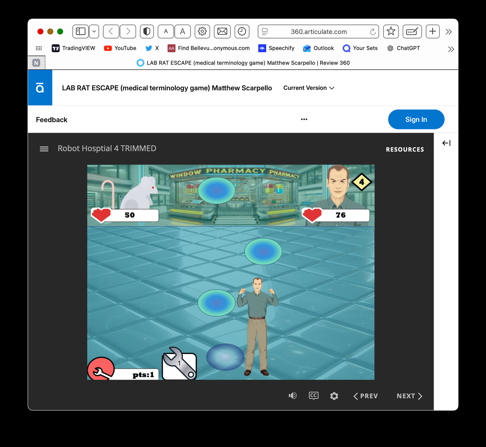

University of Nebraska Medical Center · E-Learning Internship
Learning Media & Collaboration at UNMC.
At UNMC, I worked with educational animation and interactive learning media, combining visual communication, feedback, teamwork, and technical problem-solving.
THE QUESTION
Why this project?
How can challenging medical and scientific topics become approachable, memorable learning experiences?
These work samples show animated instructional scenes and a medical-terminology game interface, connecting storytelling, interaction, and technical problem-solving.
What the work shows
Strong learning media depends on clear sequencing, accessible visuals, feedback, and collaboration—not decoration alone.
My role
E-Learning internship experience involving educational media, animation, teamwork, and technical workflows. These are samples from the projects, not claims of sole authorship.
FEATURED TECHNICAL PROJECT
Lab Rat Revolt.
A playable medical terminology game that introduced me to object-based programming, interactive feedback, and state-driven design.
Play the game and explore its logic ↗
EVIDENCE, NOT DECORATION
Figures & work samples.
Original charts and screenshots. Select any image to enlarge it.
WHAT TO KEEP IN MIND
UNMC names and marks belong to their respective owners. Share only samples authorized for a public portfolio; no patient information is included.